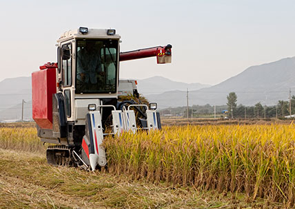
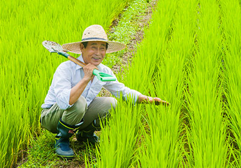
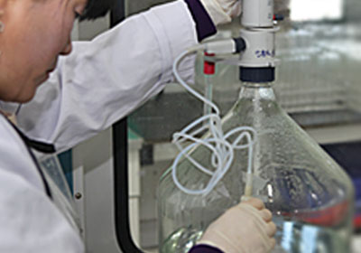
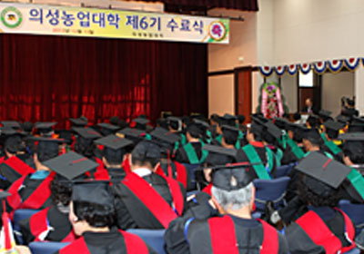
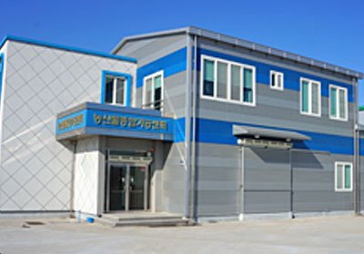
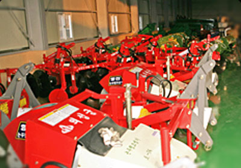
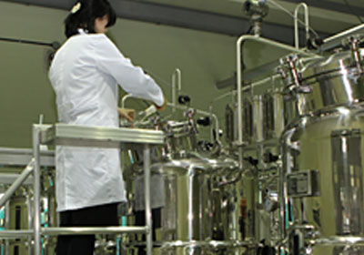
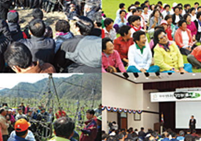

책으로 소통하는 행복한 도서관 의성군립도서관 Uiseong County Library

센터소개

식량작물 기술보급

벼우량 종자 보급
392M/T(일품, 운광벼등)
보리, 감자, 옥수수 보급종자보급
브랜드쌀 생산지도
의성황토쌀, 의로운쌀
재해방지 기술보급
냉해, 도복, 침관수, 병해충 정밀예찰 및 적기방제
식량작물시범사업 추진지도
논소득기반다양화작부체계 사업 외 9개사업-14개소
소득작물 기술보급

의성마늘 발전사업 시범사업추진 및 현지지도
- 의성 토종마늘 생산단지 운영 1개소-1ha
- 의성 명품마늘생산 대상농가교육 및 현지지도-5회(309명)
시설채소 저탄소그린에너지이용 및 안정생산시범 5개소(1ha)
마늘우량종구 시험포운영(0.5ha)
과수고품질 생산성향상 시범사업추진 및 현지지도
친환경 고품질 과실생산시범 외 10종 24개소
특용작물 재배시범사업추진 및 현지지도
버섯재배에너지절감시범 외 2종 3개소
축산시범사업 추진 및 현지지도
직무육성 조사료 신품종보급 외 7종 16개소
종합분석실 운영

토양검정에 의한 건강한 흙 만들기
- 쌀소득등 보전직접지불제 검정
- 친환경 품질인증등 농가의뢰
- 친환경농업지구 및 토양개량제 살포량산정
- 주요작물 재배지 토양검정
쌀품질 관리실
- DNA검사 : 쌀 유전자 분석으로 품종파별 및 순도검사
- 쌀외관분석 : 완전미외 4종 분석
- 쌀성분분석 : 단백질외 3종 분석
의성농업대학운영

설립이념
의성농업의 미래를 선도하는 정예농업인력 양성
운영기구
학장(군수), 운영위원
과정 및 인원
3개과정 120명(과정별 40명)
교육시설
의성군농업기술센터 강당 강의실 및 현지포장
지원대상
의성군 관내 거주하는 남·여 농업인
교육기간
1년(28회 120시간 이수 → 1일 4시간 교육)
교육생 선발 및 졸업 교육생선발
홍보(1월) → 희망자접수(2월) → 선발기준 → 의거 선발 → 합격자 통보(2월말) → 입학식(3월초) → 교육(3월 ~ 10월) → 졸업(11월)
쾌적하고 활기찬 생활환경 개선

쾌적하고 활기찬 생활환경 개선
농업인건강관리실 설치 21개소
농작업환경개선 편이장비 지원 12개소
태양열이용 온수기 설치 49호
농촌건강장수 마을 육성 2개소
농촌여성 일감갖기 사업장 25개소
농심나눔쉼터조성 157개소
농촌주거환경개선 1,236호
농산물종합가공센터 운영
- 설치 기자재 : 조청(물엿)라인 1식, 잼라인 1식, 건조기1, 포장기(환제조기, 진공포장기, 라벨기)
- 사업장소 : 안계면 시안리 안계지소내
- 활용가능품목 : 쌀, 마늘, 산수유 조청(물엿), 사과잼
사전 신청 및 판매원 등록된 농업인
농기계임대

농기계 임대사업 : 2개소
- 장 비 : 농용굴삭기외 44종 248대
- 임대료 : 1일 10,000원 ~ 50,000원
- 임대일수 : 1~3일
- 회원가입 후 인터넷, 전화, 방문신청
농기계 순환수리
농업기계 사용교육
- 농업인 실수요자반, 여성농업인 농기계반
- 신개발기종 조작기술
- 농기계안전사고 예방
미생물배양실

우수 미생물 대량증식 보급으로 토양복원, 재배작물 생육촉진, 내병성 증진을 통한 친환경 농산물 생산 확대
가축 면역력 증진, 생산성 향상, 축사환경개선으로 축산경쟁력 제고
사업내용
- 규모 : 423m2(일반철골구조 지상1층)
- 주요배양장비 : 멸균배양기외 43종
- 생산균종 : 광합성균, 유산균, 효모균, 고초균, 방선균, 누룩균, Bt균, Bm균 등
- 생산규모 : 150톤/년
추진내용
- 공급기시 : 연중
- 공급대상 : 의성군에 거주하는 농업인
- 공급량 : 영농규모에 따른 적정 필요량
- 2013년 공급실적 : 43,740ℓ, 3,320 농가
농업인영농기술교육

새해농업인실용교육
- 1~2월 : 6,000명 교육
- 과정 : 5개 분야 (벼, 채소, 과수, 양봉, 농촌여성)
- 내용 : 고품질 농산물 생산, 유통기술 및 군정홍보
여성농업인 과학영농 생활기술교육
- 한마음대회 및 리더십 배양교육 : 23회 2,800명
- 농업 현장기술교육 : 7회 700명
돌아오는 농촌인력 양성
- 대상 : 의성 귀농, 귀촌인 (200명)
- 내용 : 귀농귀촌 교육운영 및 현장실습 지원
선도농가 경영(강소농) 육성
- 대상 : 644명 (강소농 신청 농업인단체)
- 내용 : 강소농 교육 및 컨설팅, 사업관리, 평가 등